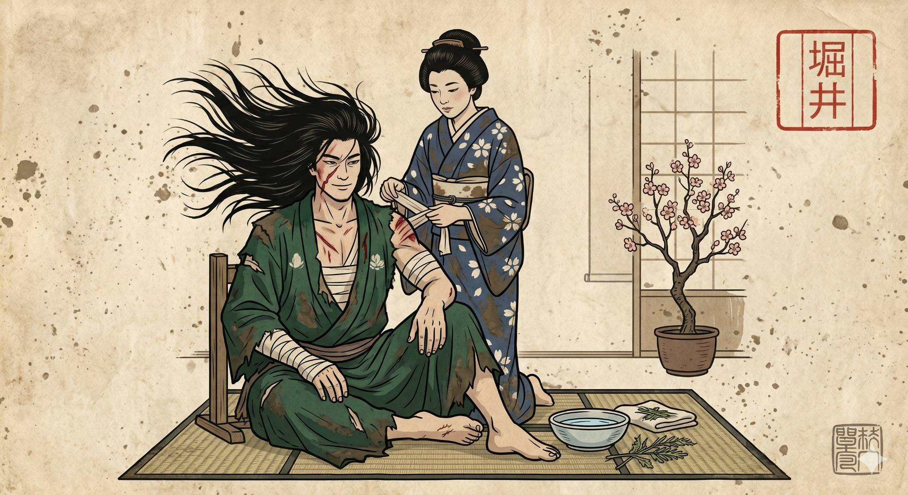
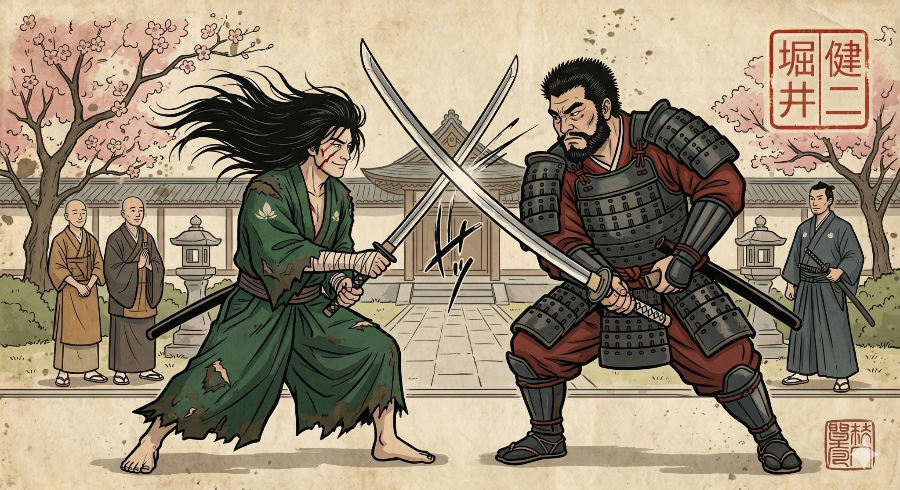
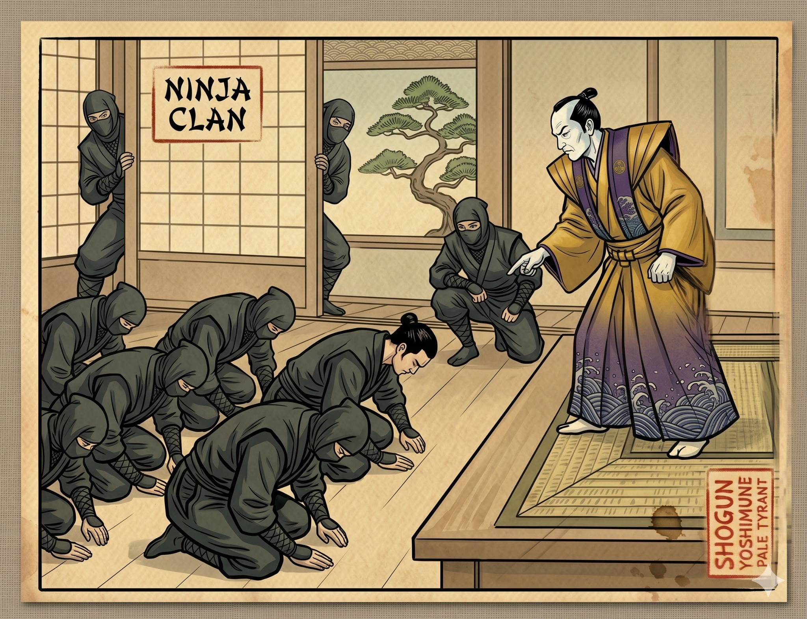
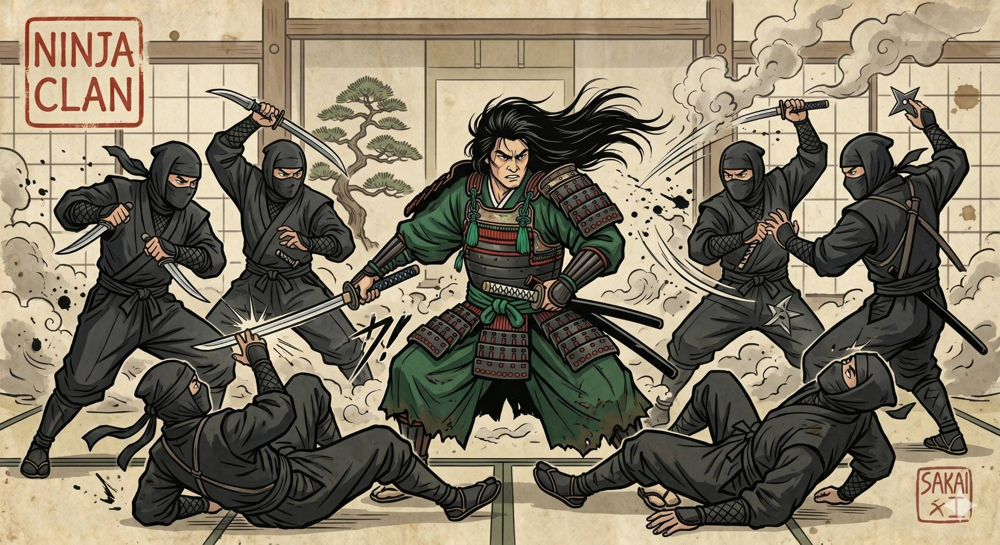
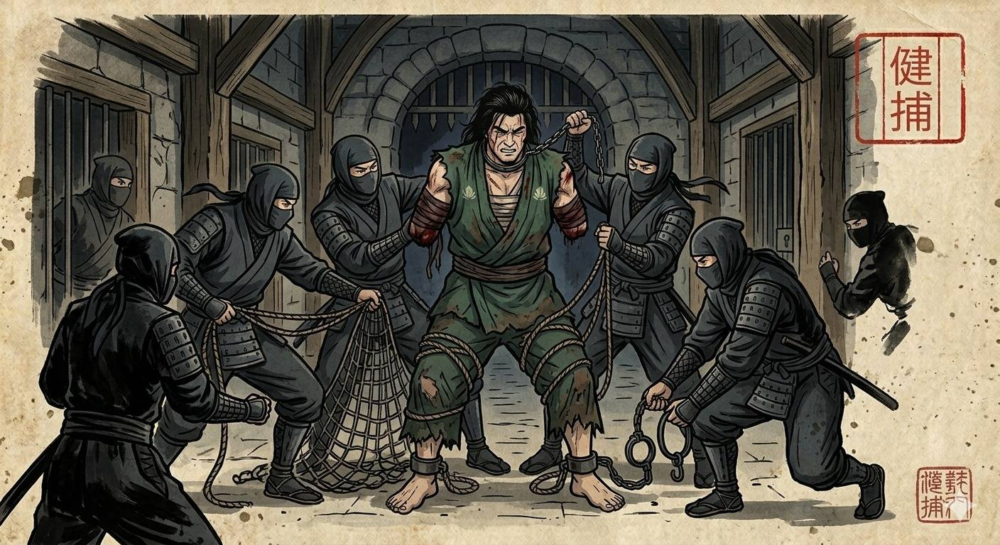
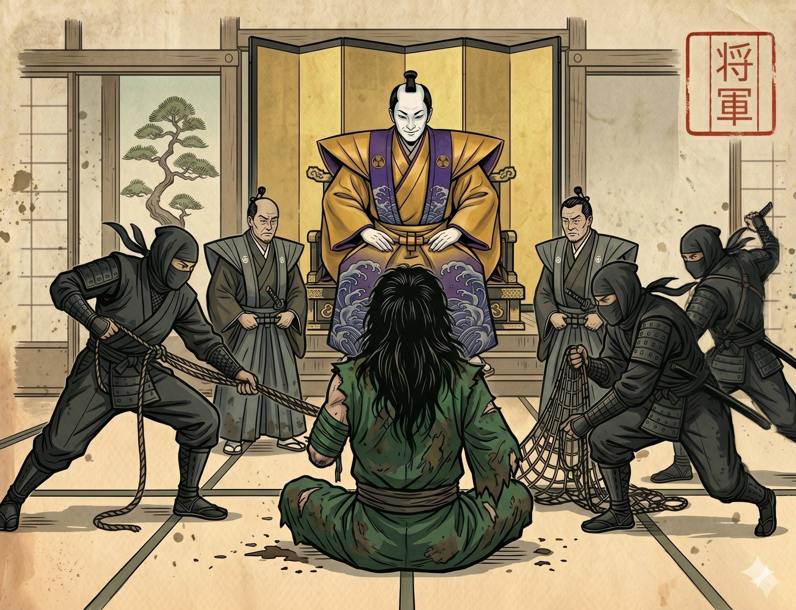
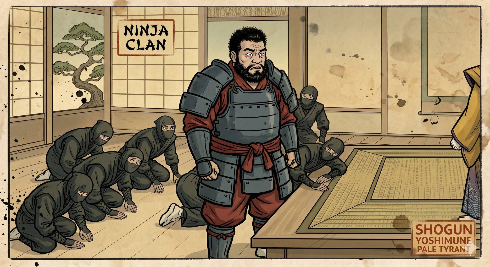
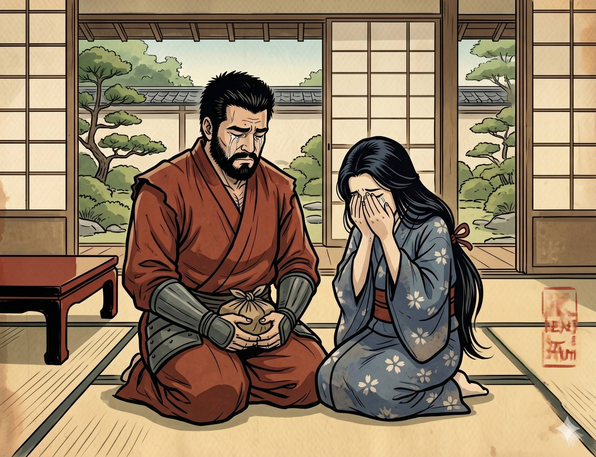
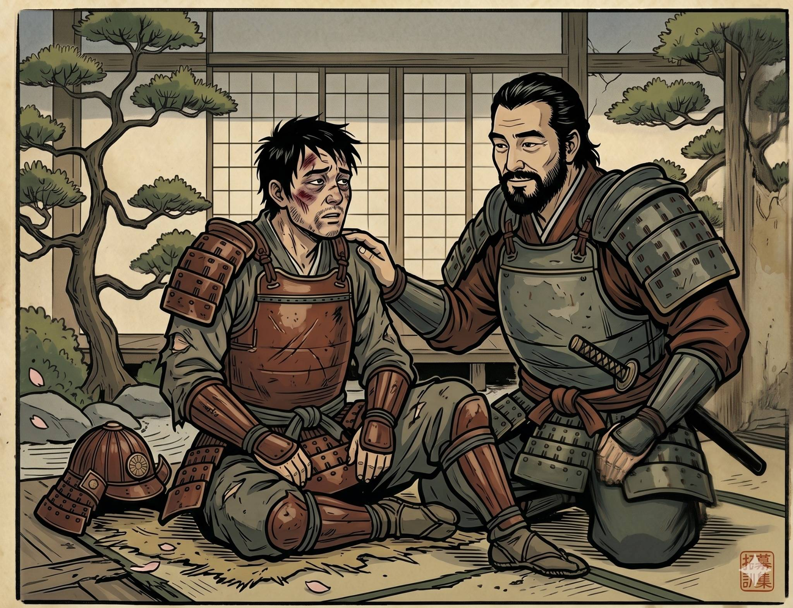
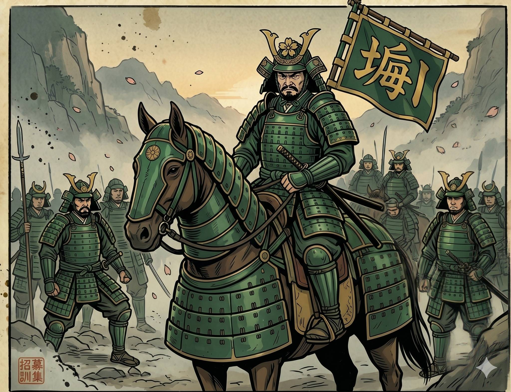

Ashes of Emerald
The Emerald Sacrifice






The Command of Blood
The empire trembled under the heel of the Tyrant Shogun, but no blade was more feared than that of Sakai Hiroshi. Clad in emerald-green robes, Hiroshi served as the Shogun’s greatest weapon until the day he was ordered to massacre an innocent village. “My blade was forged to protect the weak, not to silence them.” With those words, Hiroshi turned his back on the throne. Furious, the Shogun abandoned honor and unleashed swarms of ninjas into the night. They hunted Hiroshi with smoke, traps, poison, and deception. In the final clash, the exhausted warrior was overwhelmed, both of his arms severed before he was dragged back to the palace in chains.
The Empty Shell
Hiroshi was imprisoned within a damp stone cell, his emerald robes soaked in blood. Yet despite his broken body, his spirit remained untouched. When Kenji finally visited, despair filled the room. The Shogun had threatened Kenji’s family, forcing him to carry out Hiroshi’s execution personally. Ami wept bitterly upon hearing the news, but stood beside Kenji through the unbearable burden. Looking upon his old friend, Kenji broke into tears. Hiroshi only smiled softly. “Do not grieve for me, Kenji.” “A warrior without his weapon is nothing but an empty shell.” In those final words, Hiroshi gave Kenji permission to choose survival over loyalty.
The Rising Flame
The execution arrived beneath suffocating silence. Kenji stood behind Hiroshi, trembling as he raised the blade. The Tyrant Shogun watched from above, believing he had destroyed the bond between his warriors forever. With a swift and merciful strike, Kenji ended Hiroshi’s suffering. But the Shogun had made a fatal mistake. Days later, Kenji stood atop a cliff overlooking a hidden valley. Around his brow rested a headband bearing Sakai Hiroshi’s crest. Behind him, hundreds of ronin emerged from the shadows. On that cliff, the Sakai Clan was born — a rebellion forged through sacrifice, destined to burn the Shogun’s empire to ash.





